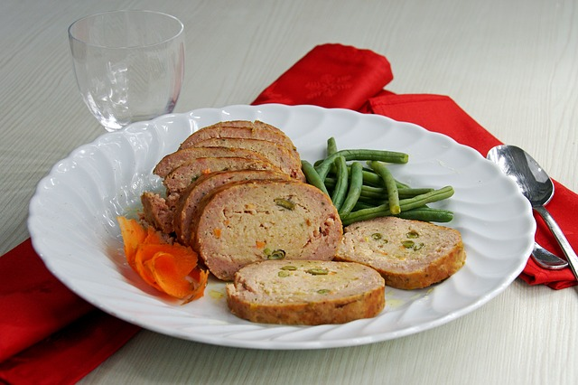

ミートローフ

材料 ４～５人分
- ひき肉
- 300g
- ⚫ 卵
- 1個
- ⚫ パン粉
- 40g
- ⚫ 牛乳
- 1/2カップ
- すりおろし人参
- 1本
- バター
- 15g
- 玉ねぎ
- 1個
- ミックスベジタブル
- 50g
- 塩胡椒
- 少々
作り方
1
⚫をすべて合わせてパン粉に十分水分を吸わせておきます。
にんじんはすりおろし、軽く水分を絞っておきます。
2
フライパンにバターを入れ中火で玉ねぎが透き通ってきたらミックスベジタブルも加えます。
バットにすべて取り、冷まします。
3
ひき肉と1～2の材料と塩胡椒をすべて合わせてしっかり練り混ぜます。
4
パウンド型にオーブンシートを敷きタネを詰めます。
角はヘラで少し押しておくと焼きあがりが綺麗です。
5
200℃に予熱したオーブンで35分焼成します。
竹串を指してみて透明な肉汁であれば焼けているサインです。